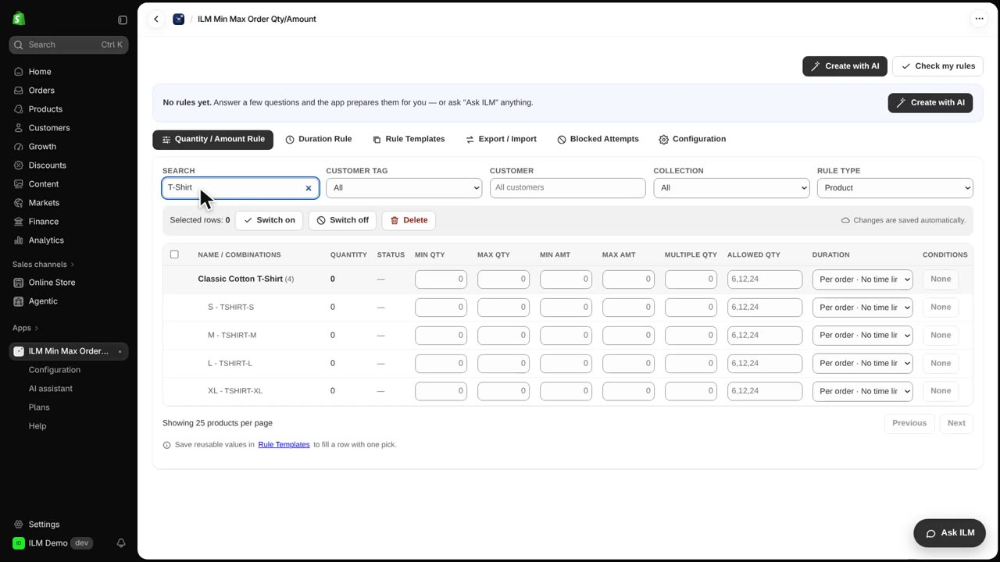
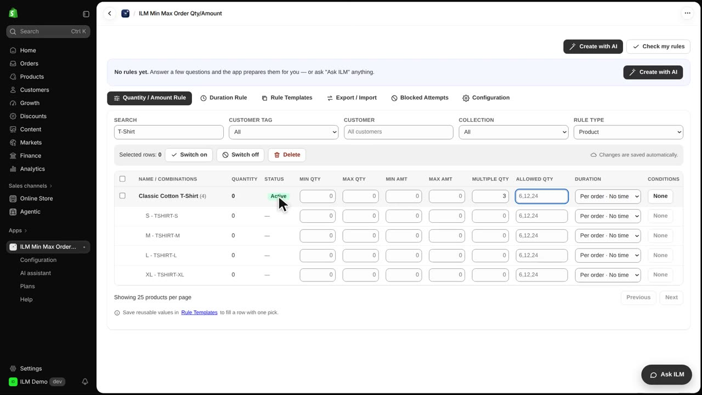
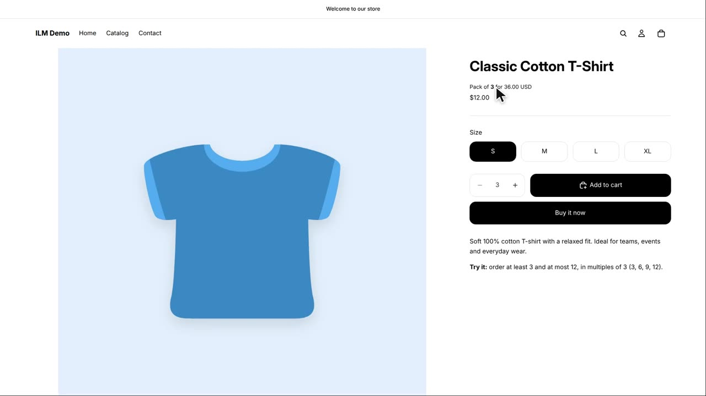
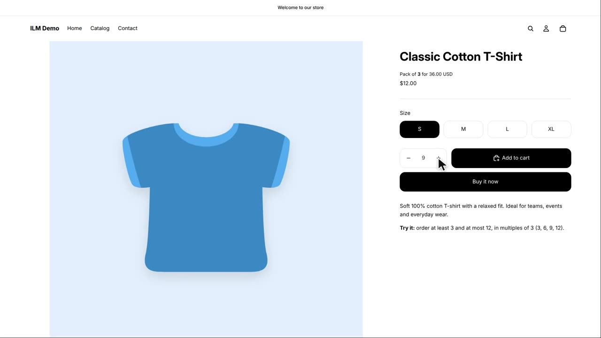
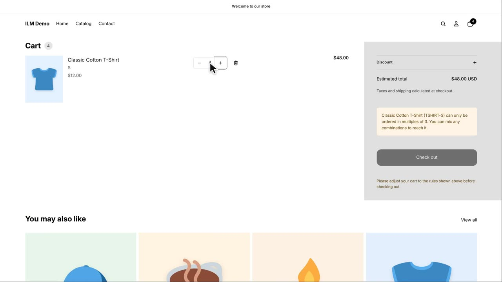
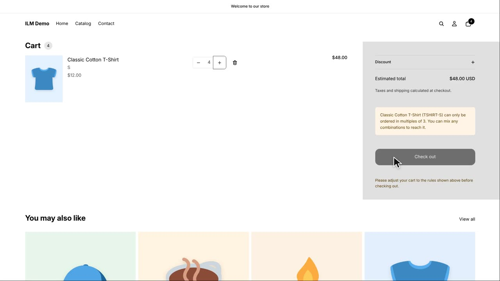
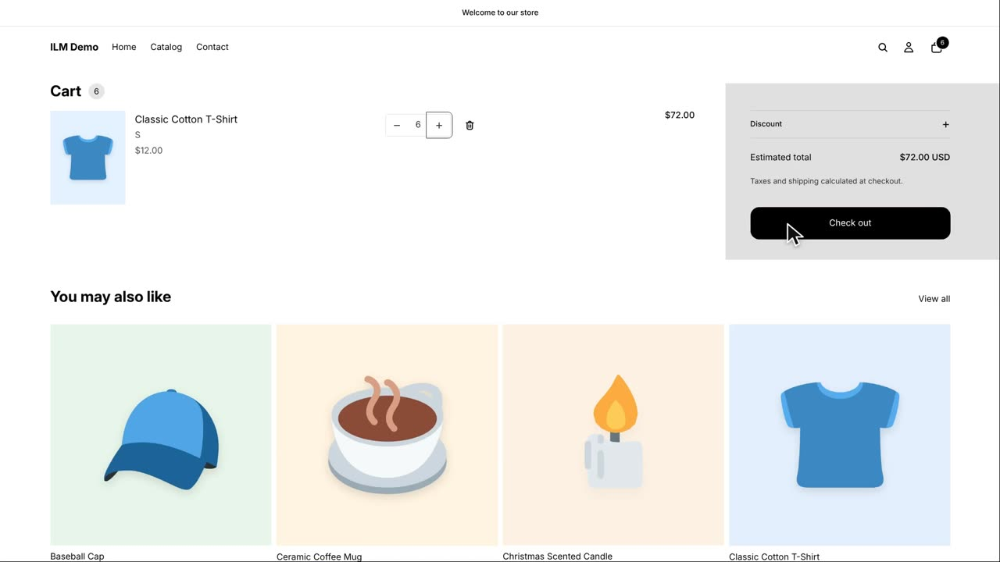

In this lesson you sell a product only in packs, so shoppers can buy three, six, nine and so on, but never a single piece. This is perfect for wholesale-style bundles, party favours, or any item that is packed and shipped in fixed sets. Today we use the Classic Cotton T-Shirt with a multiple of three, and you will see the pack message, the stepped quantity box, and the cart refusing a quantity that is not a multiple.
First, open the app and search for the Classic Cotton T-Shirt in the rule grid. The grid lists every product with its own row of settings, so you can find the exact item you want to sell in packs.

In the Multiple Qty field for the Classic Cotton T-Shirt, type three and then leave the field. The rule is saved automatically, and the Active label confirms the rule is live.

Now open the product page in the storefront. A line appears near the quantity box that tells the shopper this item is sold in a pack of three, and it shows the pack price.

The plus button in the quantity box now goes up in steps of three. Each click adds a full pack, so the shopper sees three, then six, then nine, and never an invalid number like four or five.

The shopper adds one pack of three to the cart, then goes to the cart page and changes the quantity to four. This is the moment the rule is tested, because four is not a multiple of three.

The cart shows a notice explaining that the quantity must be a multiple of three, and the Checkout button is locked. The shopper cannot proceed until the quantity is corrected, which protects you from receiving orders you cannot fulfil as packs.

When the shopper changes the quantity to six, the notice disappears and the Checkout button is active again. Six is a valid multiple of three, so the cart is happy and the order can go through.
